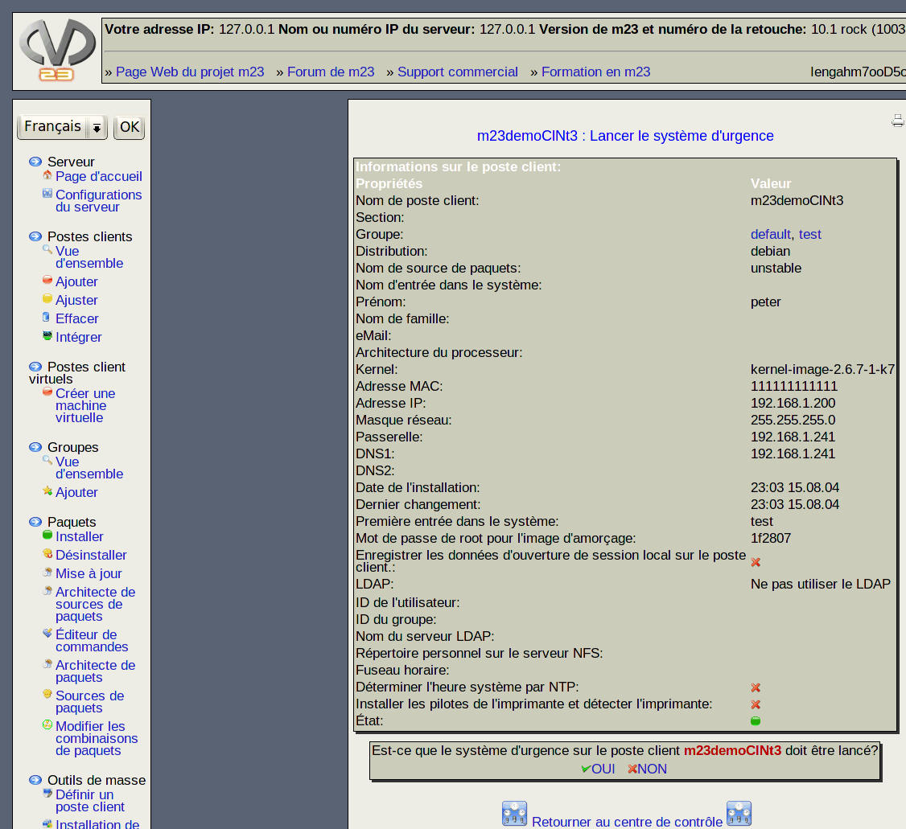

Pour démarrer un poste client dans un but de réparations ou de diagnostiques, vous pouvez démarrer le système d'urgence par le réseau (netboot). Après le démarrage, le client lance une console sur laquelle vous pouvez travailler. Pour lancer le système d'urgence, cliquez sur Système d'urgence derrière le nom du client.

Sous-sections
root
2017-01-05